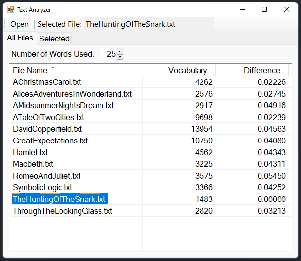
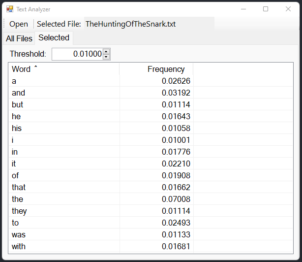
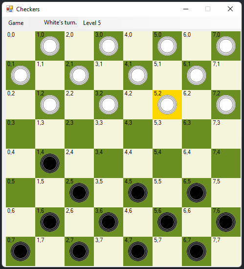
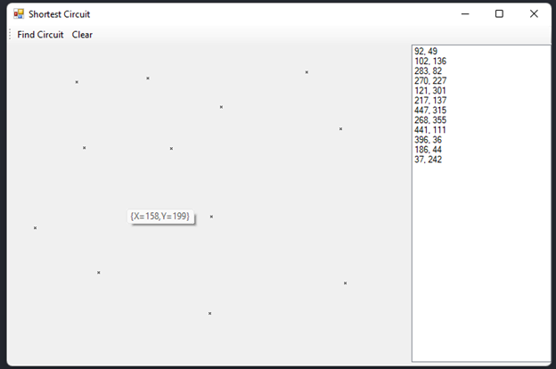
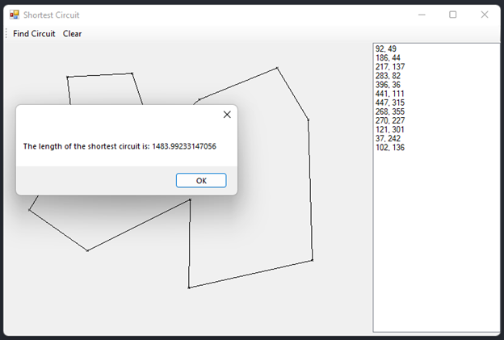
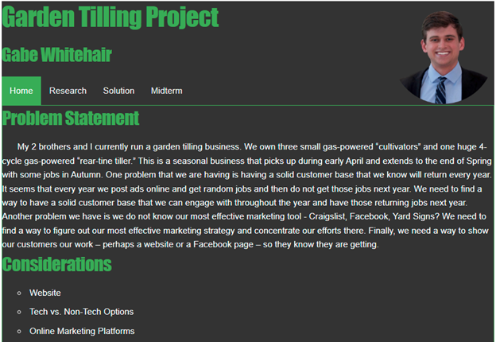

Resume:
Transcript:
Relevant Courses:
- Data Structures and Algorithms (C#)
- Programming Fundamentals (Java)
- Intro to Computer Engineering (C)
- Intro to Computing Science (Python)
Programming Skills:
C#, Java, Python, C, HTML/CSS, JavaScript, Nodejs, Github, Visual Studio
Projects:
Text Analysis (C#): Performs text analysis on large txt files to search for word frequencies and differences between other txt files. Uses leftist trees, min priority queues, and frequency tables. Github↗ Instructions↗


Checkers AI (C#): Plays a checkers game against an AI at level from 1 (easy) to 12 (impossible). Uses Binary Trees and Alpha-Beta Pruning. Github↗ Instructions↗

Shortest Circuit (C#): Calculates the shortest path from a matrix of at most 12 points. Uses doubly linked lists, queues, and stacks. Github↗


Arduino LCD Thermostat (C)Soldered and wired LCD and thermostat to Arduino. Sets a temperature and heats or cools based temperature reading. Sets LCD to color based on heating/cooling state.


 Garden Tilling Problem (HTML, CSS, Javascript): Website for high school garden tilling business. Demonstrates basic proficiency in HTML, CSS, and Javascript. Website↗
Garden Tilling Problem (HTML, CSS, Javascript): Website for high school garden tilling business. Demonstrates basic proficiency in HTML, CSS, and Javascript. Website↗
